Accessibility in product teams
Turning accessibility into a team responsibility, from discovery through release, not one person's fix at the end.

The pipeline
Accessibility fails most often not because nobody cared, but because it entered the process too late to fix cheaply. It belongs at every stage, not just QA.
Discovery
Include disabled users in research, not just as an afterthought.
Design
POUR-checked, annotated for handoff.
Specification
Accessibility requirements written as acceptance criteria.
Development
Built with semantic, native controls first.
QA
Tested against the criteria, not just visually reviewed.
Release
Known issues tracked as debt, not silently dropped.
The cost of fixing an accessibility issue rises the later it's caught, a missing label costs nothing to add at design time, and considerably more once it's shipped and someone else has to find it.
Annotations & handoff
A design file that only shows what something looks like leaves accessibility as a guess for whoever builds it. A handful of annotations closes that gap.
- Accessible name: what should assistive technology call this element, if it's not obvious from the visible label?
- Role or trait: what type of control is this, if it's custom-built rather than a native one?
- State: selected, expanded, disabled, invalid, whatever applies.
- Focus order: where does this sit in the sequence, and where does focus go after an interaction?
- Grouping: should related elements be announced together, or separately?
- Hidden or decorative content: what should be excluded from the accessibility tree entirely?
Not every field applies to every component, and native controls often provide most of this automatically. The annotation only needs to cover what isn't already handled by choosing the right underlying element.
Definition of done
"Accessible" needs a concrete definition, or it quietly becomes optional under deadline pressure.
Design
Meets contrast minimums, annotated for handoff, reviewed against the POUR checklist.
Development
Uses semantic or native controls, keyboard operable, correct roles and states exposed.
QA
Tested with keyboard and a screen reader, not just visually reviewed.
Product
Known gaps tracked explicitly as accessibility debt, not silently dropped from scope.
Accessibility debt is worth naming explicitly, the same way technical debt is. An issue that's tracked and prioritised is very different from one that's simply forgotten because nobody wrote it down.
Ready to check where a real page stands against these criteria?
Run a free audit